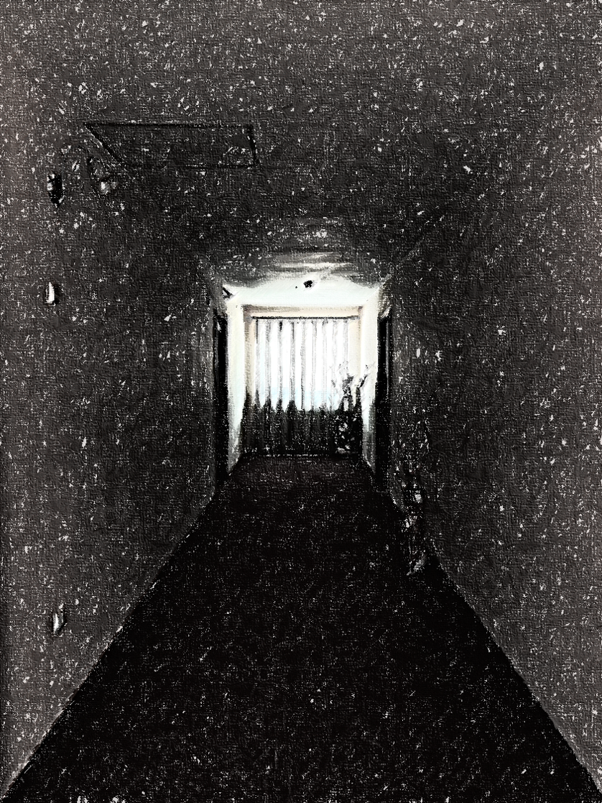

“확실한 건, 폐 없이 웃을 수 있다는 거.”
어떻게 소리를 내냐는 질문에 전과는 달리 비교적 길게 답한다.
하지만, 아직 오드라데크의 정체를 알기엔 정보가 부족하다.
재차 질문을 하려는 순간 오드라데크는 도망간다. 어서 오드라데크가 간 방향으로 가보자.
어떻게 소리를 내냐는 질문에 전과는 달리 비교적 길게 답한다.
하지만, 아직 오드라데크의 정체를 알기엔 정보가 부족하다.
재차 질문을 하려는 순간 오드라데크는 도망간다. 어서 오드라데크가 간 방향으로 가보자.
계단으로